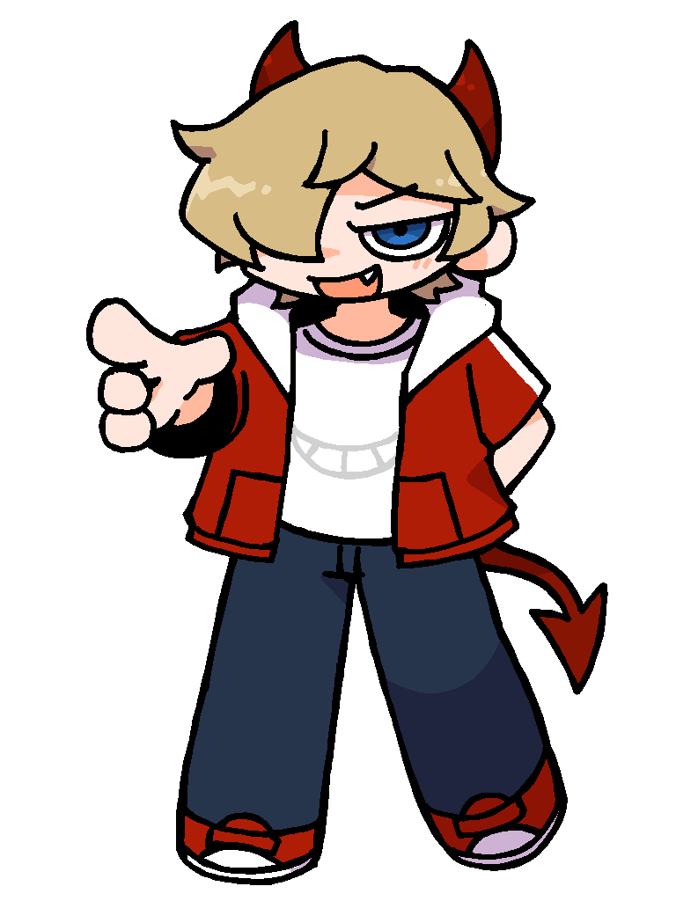

アクマに憧れているニンゲン。エレスの幼馴染で親友。思い立ったらすぐに突っ走る行動派。難しい話と、その場でじっとすることが苦手。宝物のアクマの角カチューシャは、風呂と寝る時以外ずっと身につけている。複雑な家庭環境を持つ。妹のライムのことを大切に思っている。
【性別】男性 【一人称】俺 【身長】172cm 【好きなもの】アクマ / ゲーム / スナック菓子 【苦手なもの】勉強 / ニンジン
←Back